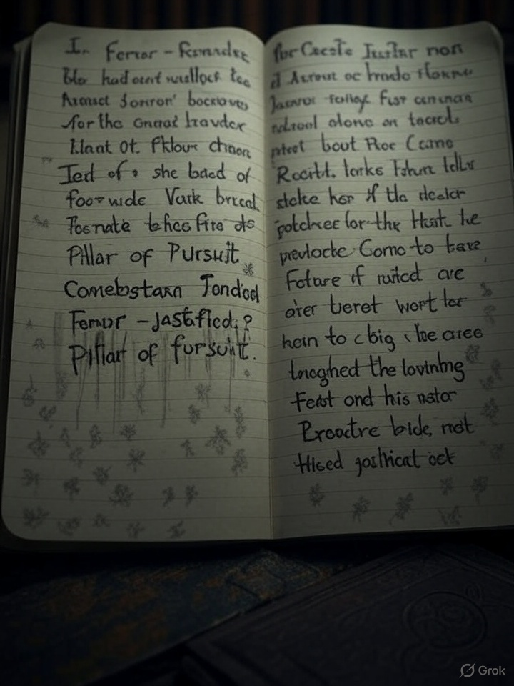
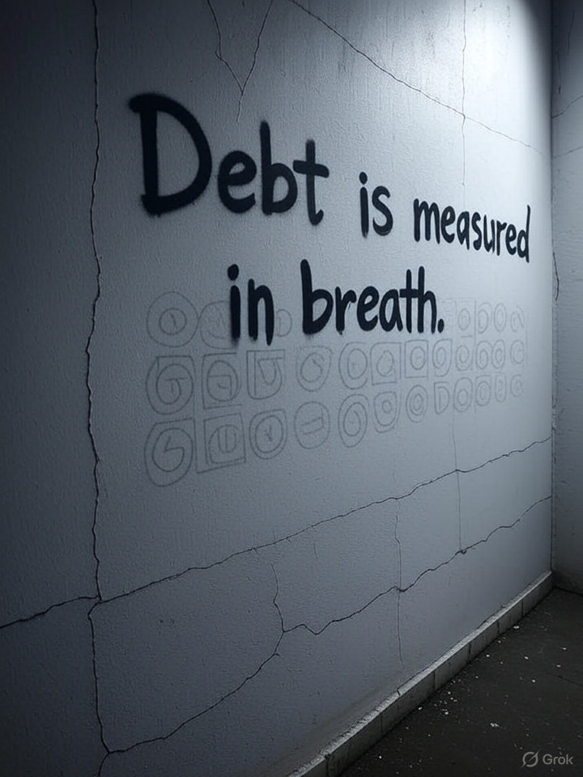
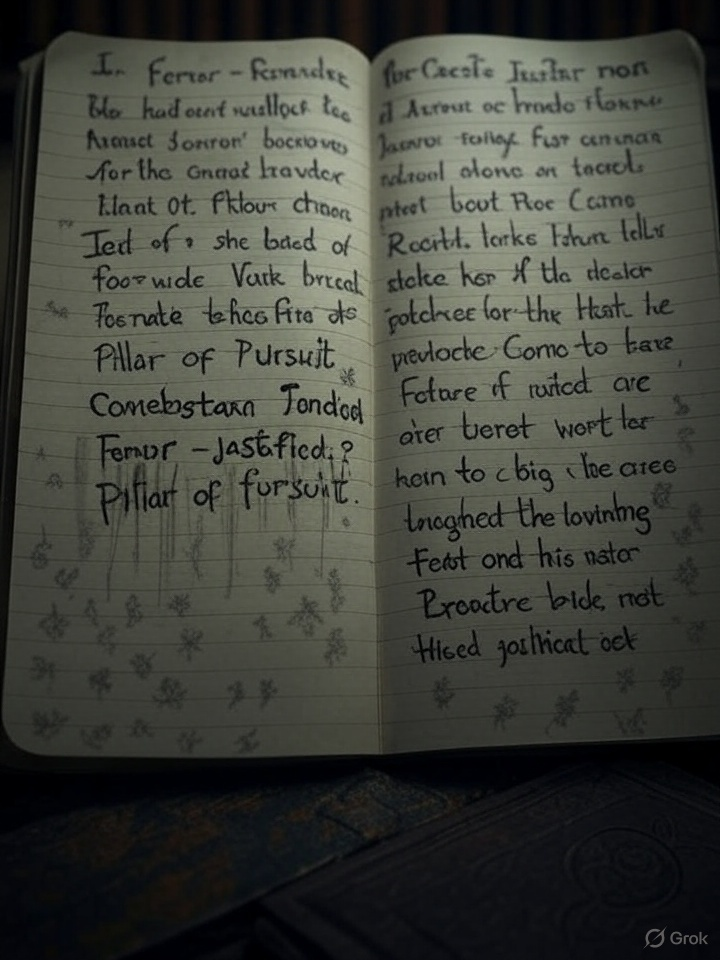
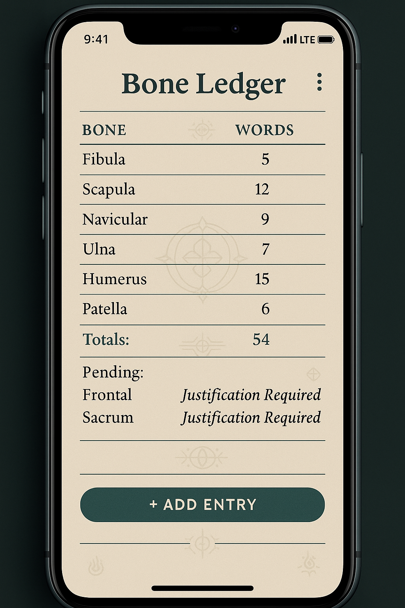
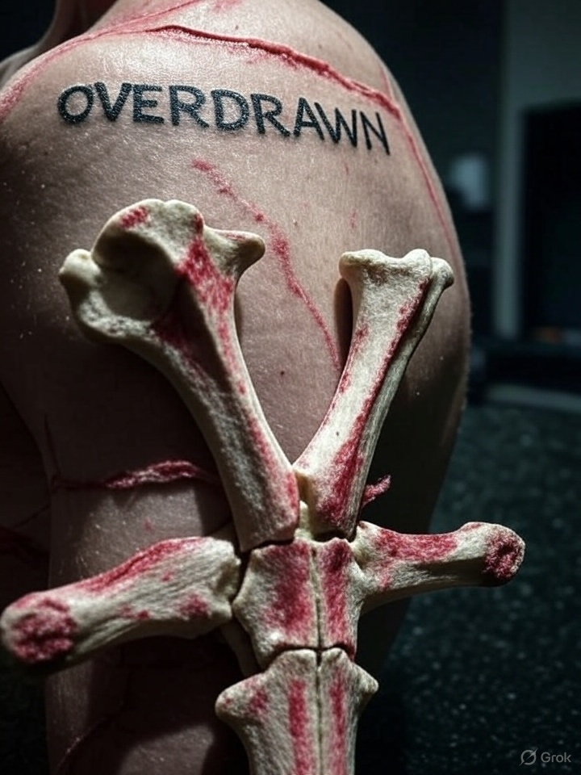
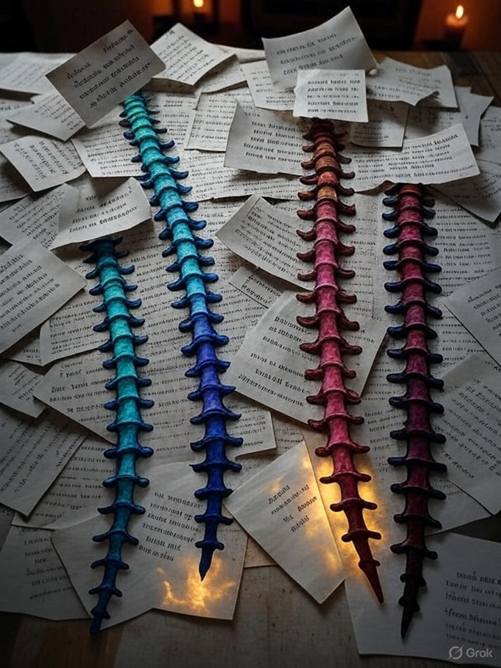
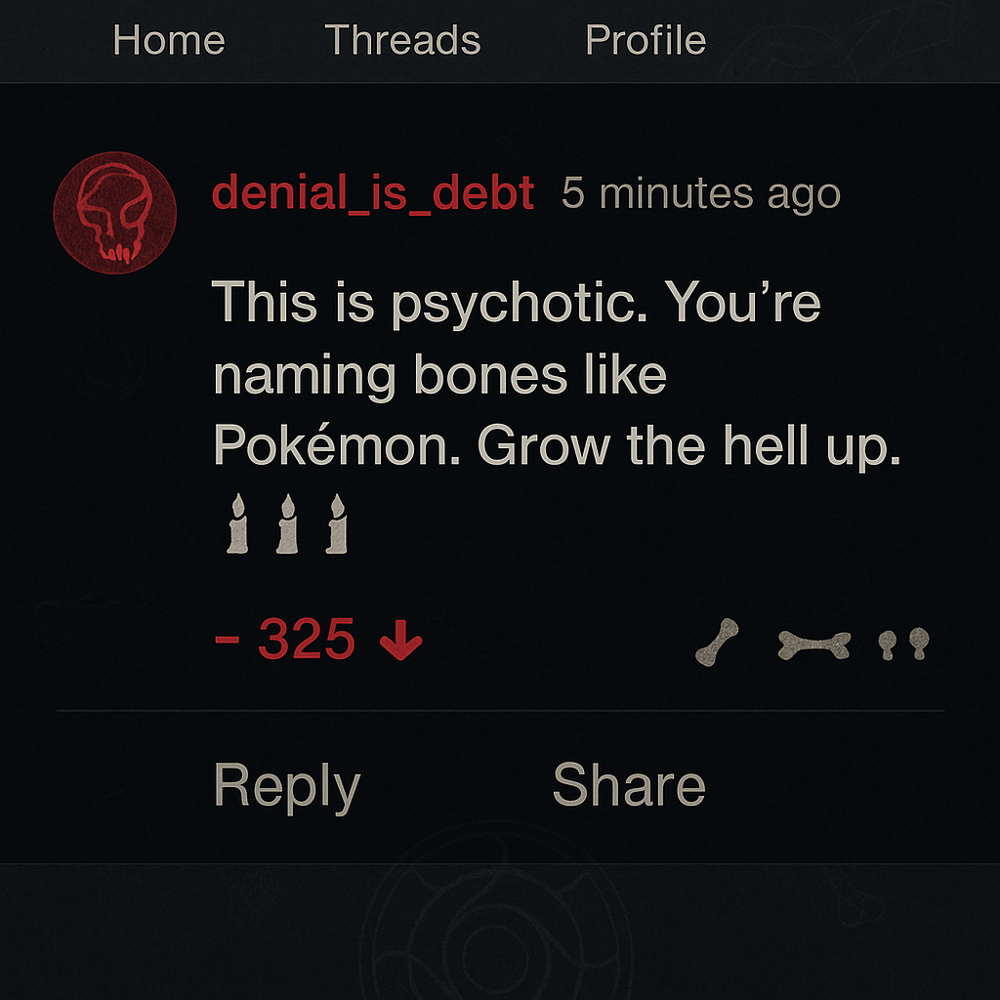

If your justification is too short, the glyph recedes. Too long? It bites back.
They were calling it the debt now.
No one knew who coined it, but it passed from tongue to tongue like bone heat. One child in the shelter whispered her collarbone’s name — but offered no reason — and began shaking in her sleep until her jaw locked.
They said if you named without justifying, the name turned back on you.
Henders kept the chalkboard up from the last phrase burst, but underneath he had written a warning in thick white strokes:
“Each name is a stake.
Each justification is a thread.
When threads bind to bone, the bone awakens.
If you fail to name, you forfeit sovereignty.
If you name wrongly, you are overwritten.”
A girl named her patella — and was unable to walk the next day. She hadn’t explained why it mattered. The group murmured that the bone had revoked its function.
He was once a slam poet. Now he preached to the reciters.
Father Anno stepped into the circle like a prophet walking onto fire.
“Bones are archives,” he said, “and you are the librarians. Each word you utter is an annotation. Don't lie to the archive. It will strike the lie from your marrow.”
He held out his forearm and pressed his fingers into the hollow just below the radius.
“Ulna – Named. Justified: Conduit of Refusal.”
The skin beneath his touch shimmered faintly — a glyph bloomed in ghost grey.
Someone asked, “Why refusal?”
Anno smiled. “Because this arm once stopped a knife. It said no.”
The congregation began naming, slowly, tremulously.
> “Sternum – Named. Justified: Bark of the chest tree.” > “Fibula – Named. Justified: Shadowbone, mirror of the weight bearer.” > “Zygomatic – Named. Justified: Prism of recognition.”
Each successful naming was accompanied by the faintest tremble in the walls. Anno nodded, then said the final word that turned the ritual into doctrine:
“Debt is measured in breath. You owe what you dare to name.”
Naila sat alone, reciting in her head. The itch was already in her shoulder — not on the skin, but beneath it. She pressed her lips to her notebook.
Scapula – Named. Justified: The shield of unspoken retreat.
Nothing happened.
She tried again, slower:
Scapula – Named. Justified: Wingbone. Locus of regret.
Her breath caught. Something shifted under the skin — not pain. **Permission.**
But she didn’t write any more that night. The itch had moved behind her eyes.
A new group now travelled between shelters — the Enumerates. They carried notebooks, taught meter and metaphor. They ran justification workshops. They handed out rhyming bones to memorize.
One flyer read:
Coccyx: Named. Justified: Last laugh of the spine.
Another:
Phalange Five: Named. Justified: Pinky promise, kept in keratin.
Some said they were just poets. Others said they were the only ones left who could name safely. Some of them glowed in the dark when they spoke.
“Dinocular Luste” was now showing up mid-justifications, as if accidentally. No one remembered saying it, but it appeared anyway.
Sternum – Named. Justified: Chamber of Dinocular Luste.
Glyphs flared then vanished.
“We’re paying debts we don’t remember accruing,” Henders muttered. “And interest is being drawn in syllables.”
If your justification is too short, the glyph recedes. Too long? It bites back.
My brother said “Sternum – Anchor of Breath” and it wasn’t enough. The skin peeled.
Words are currency now. Don't spend too many at once.
They tattooed “overdrawn” on her scapula. The mark was already there.
I am the chorus. I sing the spine. Every vertebra. With proof.
This is psychotic. You’re naming bones like Pokémon. Grow the hell up. 🕯️🕯️🕯️
